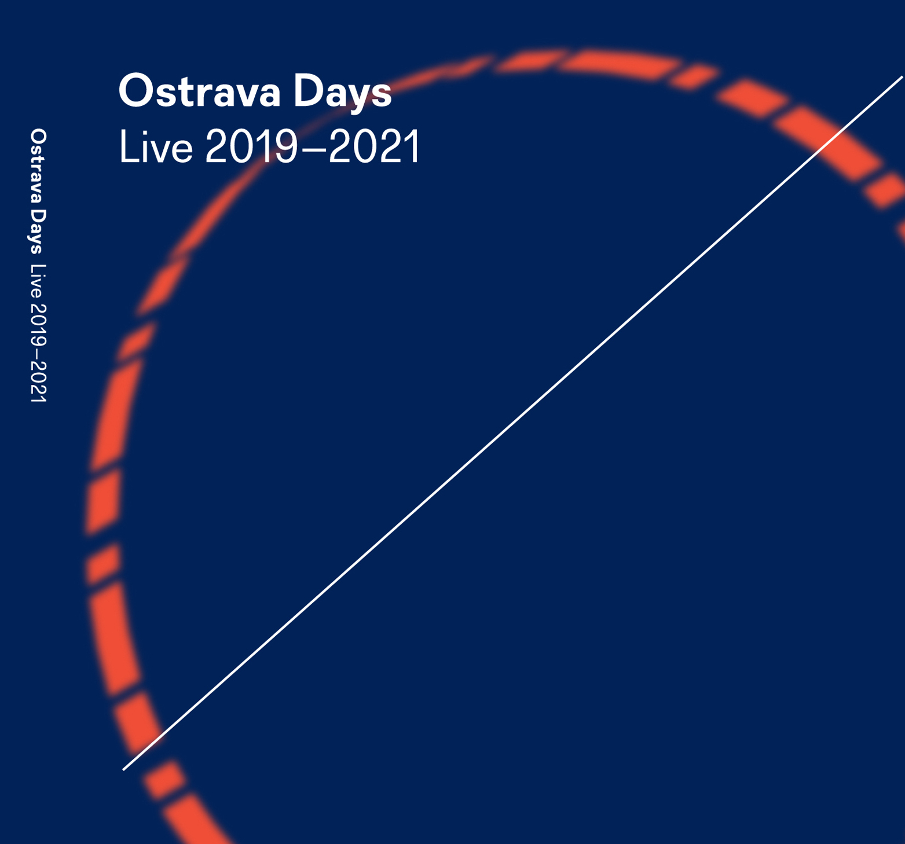
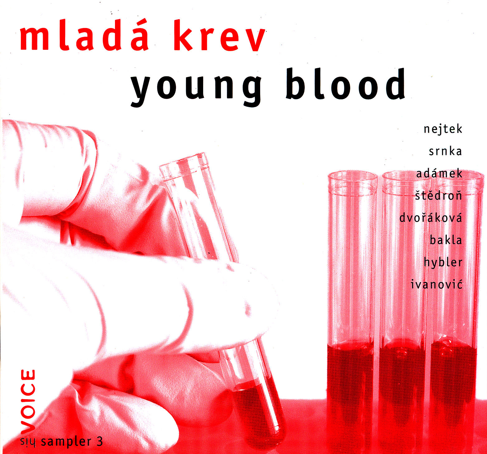
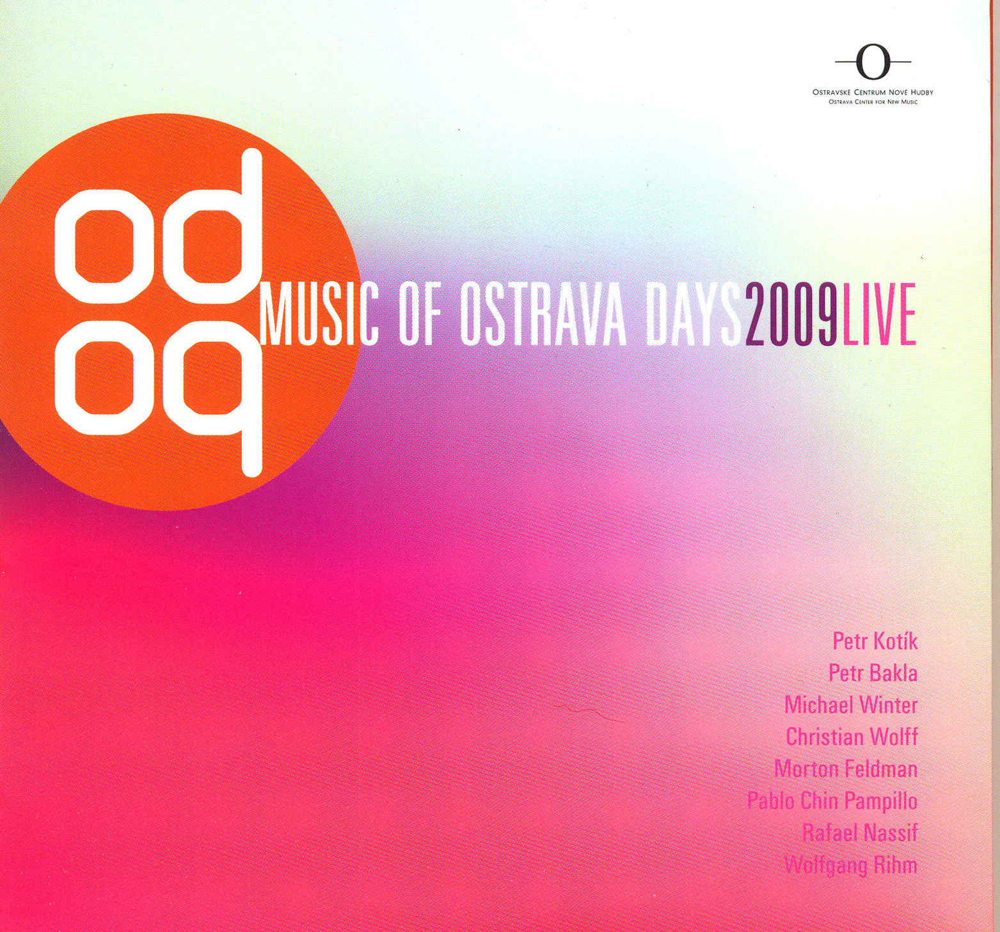
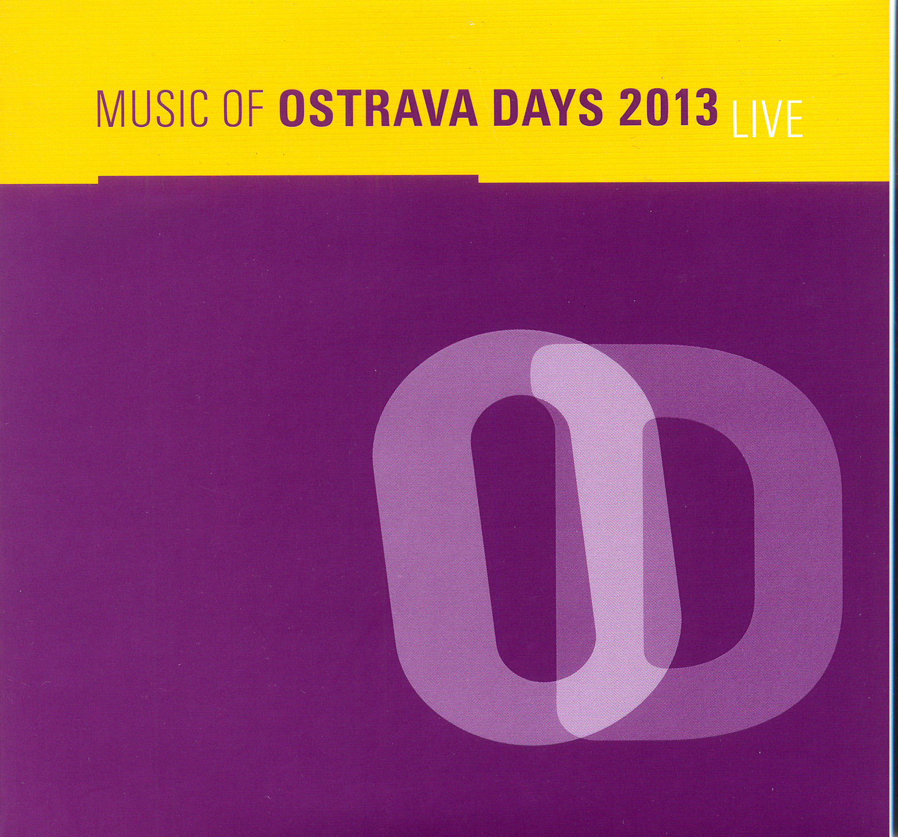
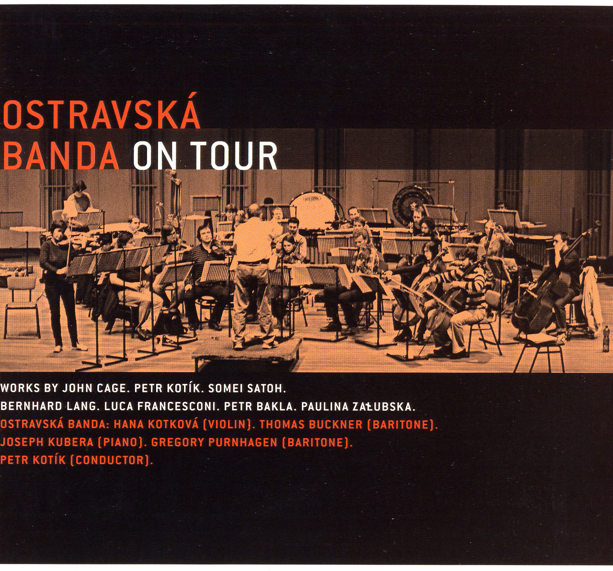
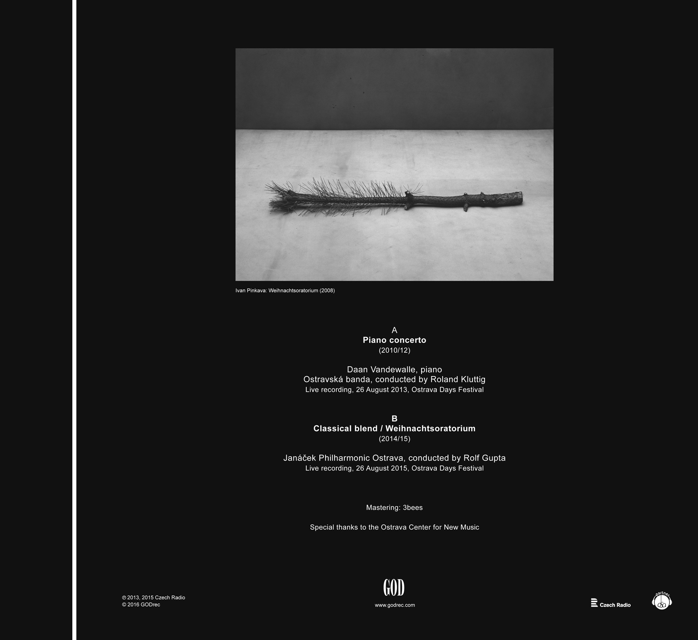

My CD's over the years

Ostrava Days Live 2019-2021
Young Blood
Music of Ostrava Days 2009 Live
Music of Ostrava Days 2013 Live
Ostravská Banda On Tour
Piano Concerto, Classical blend /NEWS
2022
April 26th & 28th
Two instances premiered by Andrej Gál and Daan Vandewalle
on the occasion of Petr Kotík's 80th birthday
PLATO Ostrava (26th), DOX+ Prague (28th)
2020
Saw a couple of fine on-line events, and 5 remarkable studio productions:
No. 4, Portfolio, Usableness of the List, Simple Constellations and May Way
have been recorded by the amazing Miroslav Beinhauer. Stay tuned!
2018
December 15th
Matthias Lorenz plays Something with something else III
Am Kirchberg 27, Frankfurt/Main, Germany
!!! UPDATE: A studio recording by the very same Matthias is now right here !!!
November
Matthias Lorenz takes Something with something else III on tour:
Nov. 26th: Wilhelm 13, Oldenburg, Germany
Nov. 25th: Kunstverein Bremerhaven, Germany
Nov. 8th: Atrium, Prague, CZ
Nov. 6th: Unerhörte Musik, BKA, Berlin, Germany
Nov. 4th: Tolstefanz Hofstelle Flammer, Germany
September 13th
Matthias Lorenz plays Something with something else III
geh8, Dresden, Germany
June 4th
Statements? performed by Berg Orchestra
Bronislava Smržová - soprano, Peter Vrábel - conductor
Továrna Holešovice, Prague, CZ
2021
December 22th
There is an island above the city for orchestra on CD!
performed by Prague Radio Symphony Orchestra & Peter Rundel
part of Ostrava Days Live 2019-2021 double-CD
October 14th
New album (CD and digital download) released on Octopus Press!
Usableness of the list / Portfolio
Miroslav Beinhauer, piano
available from the publisher or on Bandcamp
August 26th
Piano Concerto No. 2
premiered by Miroslav Beinhauer & Ostravská banda conducted by Bruno Ferrandis
Ostrava Days Festival, Ostrava, CZ
June 11th
Dog Variations performed by Neues Klaviertrio Dresden
Hygiene-Museum Dresden, Germany
2019
November
Summer Work now available on CD!
August 31st There is an island above the city premiered by the Prague Radio Symphony Orchestra cond. by Peter Rundel August 28th No. 4 premiered by Miroslav Beinhauer Ostrava Days Festival, Ostrava, CZ
May 20th
My Way (1st version) premiered by Ivan Siller
Dvorana VŠMU, Bratislava, Slovakia
UPDATE: May 2020 saw final version of the piece
January 11th
String trio no. 2 performed by ensemble recherche
Mannheim Gesellschaft für Neue Musik, Germany